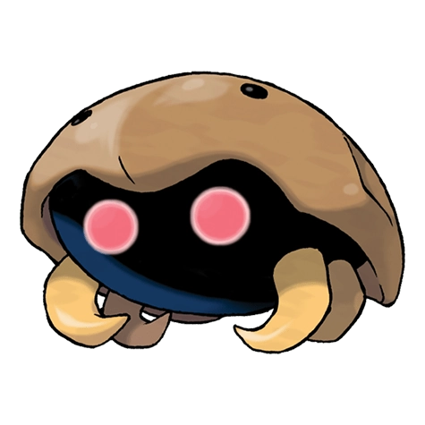

Назад
Кабуто

Кабуто — Покемон первого поколения под номером 140 в Покедекс. Обитает он в регионе Канто и относится к Каменному и Водному типу. Кабуто — это Покемон, который был восстановлен из окаменелости. Однако в крайне редких случаях обнаруживаются и живые особи. Облик этого Покемона совсем не изменился за 300 миллионов лет.
Тип:
Водяной
Каменный
Эволюция
# 140 Кабуто
=>
# 141 Кабутопс